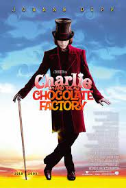
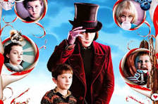
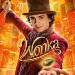

Sobre os Filmes

"A Fantástica Fábrica de Chocolates" é uma história icônica baseada no livro de Roald Dahl. A primeira adaptação, lançada em 1971, conta a jornada de Charlie Bucket, um garoto humilde que ganha a oportunidade de visitar a mágica fábrica de Willy Wonka. Em 2005, uma nova versão dirigida por Tim Burton trouxe Johnny Depp como Willy Wonka, explorando uma visão mais excêntrica do personagem.
Voltar
Elenco

O filme original de 1971 trouxe Gene Wilder no papel de Willy Wonka, uma interpretação inesquecível. No remake de 2005, Johnny Depp trouxe uma abordagem única ao personagem. Ambos os filmes apresentaram elencos talentosos, incluindo jovens atores que se destacaram como os sortudos vencedores dos bilhetes dourados.
Voltar
Curiosidades

Algumas curiosidades incluem a criação real das guloseimas no filme original e a obsessão de Tim Burton em recriar a magia do universo de Dahl. O novo filme "Wonka", estrelado por Timothée Chalamet, promete explorar a origem do excêntrico fabricante de chocolates. Com direção de Paul King, o longa promete misturar fantasia com a narrativa envolvente.
Voltar